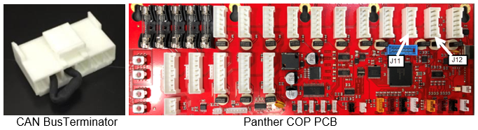
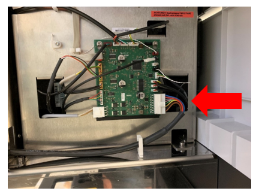
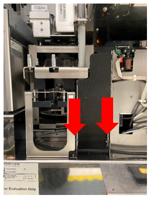
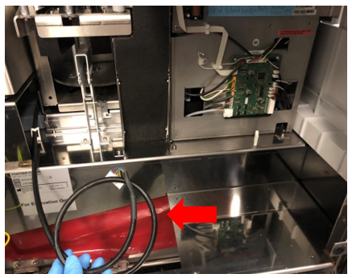
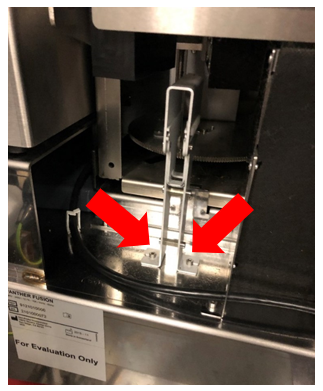
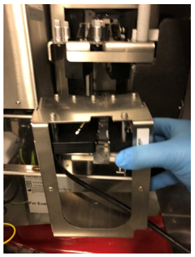
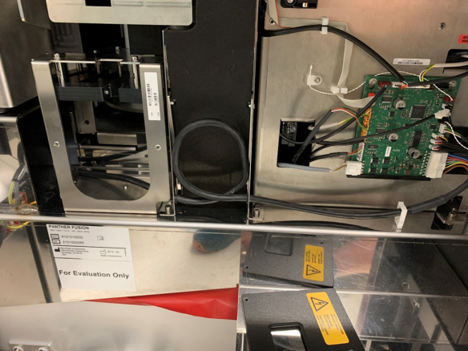
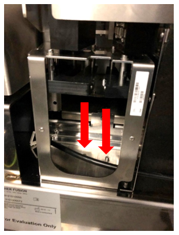

Additional Parking Slots Installation
Purpose
The purpose of this procedure is to provide instructions on additional Fusion installation requirements, including the Additional Parking Slots, Thermocycler Fiber Cleaning Nests, and the location of the CAN cables for the Panther Waste on the Fly and Fusion Sidecar on the Panther COP PCB for Panther Fusion Plus Systems.
What is Affected
This procedure provides instruction on how to install Additional Parking Slots to buffer Panther Waste on the Fly for a Panther Fusion Plus System.
Waste on the Fly allows the Fusion to continue processing, while the Panther’s Waste drawer is opened, by buffering MTUs in the Output Queue until the drawer is closed.
The correct location of the Panther Plus Waste on the Fly CAN cable on the Panther COP PCB.
Must be running System SW v7.2 or higher and Service Software v5.0.22.0 or higher.
Note: Additional Parking Slots have been cut into Panther Fusion Systems SN 00763 and above.
Parts and Materials Required
- Fusion Plus MTU
 Multi-tube unit—Container used to process tests in the instrument. An MTU contains five separate reaction tubes. The MTU is moved through the instrument by the linear distributor and includes five tiplets for pipettiing to be used in the mag wash station. Parking Module
Multi-tube unit—Container used to process tests in the instrument. An MTU contains five separate reaction tubes. The MTU is moved through the instrument by the linear distributor and includes five tiplets for pipettiing to be used in the mag wash station. Parking Module - Fusion Retrofit Kit, Tray Holder, Fiber cleaner with Mounting Hardware (if not already installed)
- Kit, Cleaning Tool (Set of 5 Trays)
Time Required
- Hardware Installation – 15 Minutes if Thermocycler Fiber Cleaning Nests previously installed or 45 minutes for both Additional Parking Slots and Fiber Cleaning Nests
Procedure
Part A – CAN Cable Connections on the Panther COP PCB
-
For existing Panther Fusion upgrading to Panther Fusion Plus: If CAN Bus Terminator is installed in position J12 it will be removed and the Fusion CAN cable moved to position J12 (the terminator can be discarded). The Panther Plus Waste on the Fly CAN cable will be plugged into position J11.
-
For new or existing Panther upgrading to Panther Fusion Plus the CAN Bus Terminator will be removed (if present) and the CAN connections for WOTF and Fusion will be as in A.i above.
-
For Panther Plus upgrading to Panther Fusion Plus the
CAN Bus Terminator will be removed from J12 and the Fusion CAN will replace it in J12.
Part B – Thermocycler Fiber Cleaning Nests
-
IF NOT previously installed, refer to Thermocycler Fiber Cleaner Nest Installation.
Part C – Fusion Additional Parking Slots
-
Disconnect the
CAN cable from Cartridge Carousel.
-
Remove routing of the
CAN cable through the Fusion Waste Chute to allow Parking Slots to be mounted, as shown below.

-
Remove the
Fusion Service Queue and save the 2 mounting screws.
-

-
Re-route and reconnect the
CAN cable to the Cartridge Carousel.
-

-
Perform Instrument Setup, and select all options that apply.
-
Perform a Full Rotary distributor teaching.
-
IF Fiber Cleaning Nests were newly installed, perform Fusion Vial Robot teaching to the Nests.
Verification
- Perform a 2 cycle OQ of the Additional Parking Slots on the Fusion Rotary Distributor.
- Install the Fiber Cleaning Trays. Refer to Part D of Thermocycler Fiber Cleaner Nest Installation.

|
Note—Informing the Panther software of loaded trays is not a customer accessible option and can only be done with the service login. It must be performed at install/upgrade of 7.2 software. Refer to TB-01772 Panther, Panther Fusion, Panther Plus and Panther Pooling Installation of System and Assay |
Additional Information
After Instrument Setup is complete, the Fusion COP, Parameter 64 dictates the configuration of the Fusion Pipettors and Additional Parking Slots. The following table describes four possible configurations:
| Fusion APP Pipettor | Fusion BLDC Pipettor | |
|---|---|---|
| Without Additional Parking Slots | 1 | 3 |
| With Additional Parking Slots | 9 | 11 |
 button at the top of the page to send feedback, comments, or change requests.
button at the top of the page to send feedback, comments, or change requests.